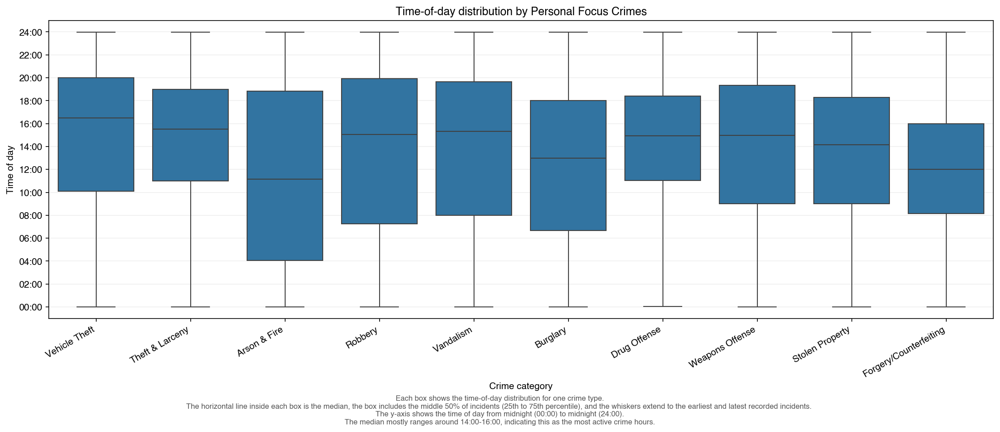

Vehicle Theft Ratio Map
Compare how over- or under-represented vehicle theft is across SF police districts.
Open visualizationA data storytelling project exploring San Francisco crime from 2003 to 2025. The visualizations below combine district-level maps, temporal heatmaps, and hourly behavioral patterns to reveal how crime shifts across place and time.
Compare how over- or under-represented vehicle theft is across SF police districts.
Open visualizationPlot individual incidents for June-July 2016 to inspect local clusters and hotspot streets.
Open visualizationAnimated heatmap that tracks how theft density evolves month by month across SF.
Open visualizationAnimated Plotly line chart showing hourly patterns for your focus crimes over time.
Open visualizationAll incidents plotted by location.
 Open image
Open image
Time series of your focus crimes over time.
 Open image
Open image
Focus crimes on x-axis and time of day on y-axis.

Open imageHeatmap with crime category on x-axis and police district on y-axis.
 Open image
Open image
Jitter plot focused on Theft & Larceny.
 Open image
Open image
If any plot does not appear yet, copy that file into the visualizations folder in this repository and refresh the page.
{kind=link}